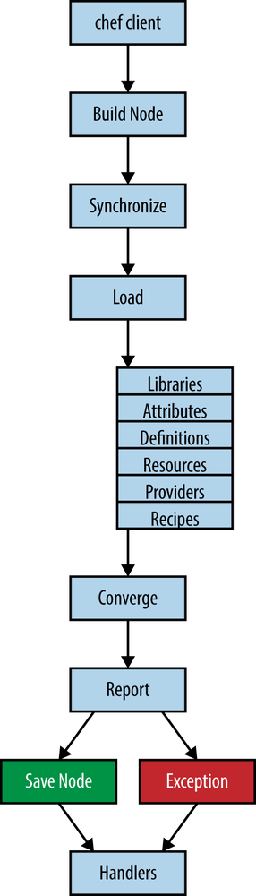
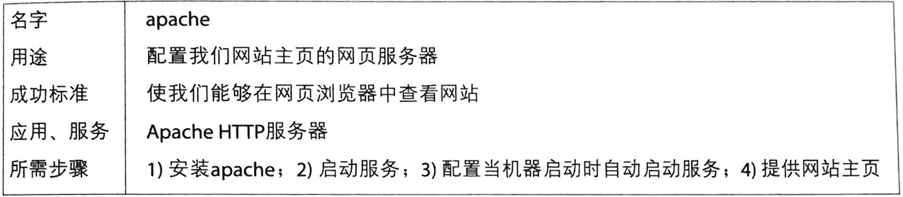
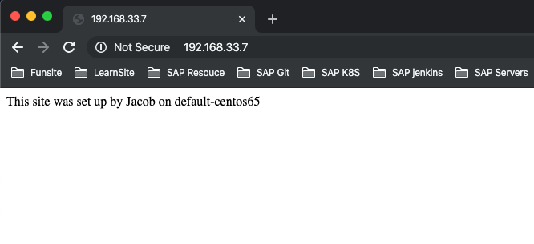

第六节 撰写和使用菜谱
- 第一个菜谱：每日消息
- 第一个菜谱：每日消息（使用
Chef开发包） Cookbook_file资源简介- 第一个菜谱：每日消息（
Chef客户端) - 第一次运行
Chef - 剖析
Chef运行 - 菜谱架构
- The Four Resources You Need to Know
- Apache菜谱：手把手教你创建菜谱
- 生成菜谱结构
- 编辑
README.md文件 - 更新
metadata.rb Package资源简介Service资源简介Template资源简介- 验证达到成功标准
- 小结
“菜谱”(Cookbook)是使用chef进行基础架构管理的基础组件；
可以将其想象为些配方单的集合。每个菜谱表示配置个单位的基础架构（比如网服务器，数据库或应用程序）所需的指令集合。
配方单则是整个个过程中包含代码的小部分，菜谱包含一个或多个配方单， 也包含其他用来支持配方单运行的组件，比如存档图像或程序库。
除此之外，菜谱中存有配置信息针对平台的实现以及需要用Chef需要管理础架构的资源的声明
1、第一个菜谱：每日消息
作为你的第一个菜谱让找们试试内我们的CentOS 6虚拟节点上自动化每日消息
(motd)配置，让我们用Chef配置它在登录时候显示一条消息说明达是虑拟机节点
取决于你使用的是chef开发包还是chef客户端, 用来生成初始的菜语目录结构的命令有所不同
1-1 Chef generate V.S. knife
现在，有了Chef开发包，我们推荐使用chef generate命令来管理菜语的目录结构。knife工具不会消失它将继续成为在生产环境下和Chef服务器交流的主要命行工具。
然而，chef generate命令拥有一些knife没有的功能。
chef generate允许你自定义生成的配方单和菜谱模板。- 同时
chef generate允许你逐步创建目录结构, 每次只添加你所雳要的组件。 knife则只能一次性生成包含所有组件的目录结构
可能包含许多你不需要的文件，这并不会影响什么，但许多人喜欢 chef generate的逐步生成功能
1-2 第一个菜谱：每日消息（使用Chef开发包）
你将使用一个叫chef的工具来生成motd(每日消息)菜谱的初始目录结构。
chef是一个和Chef开发包一同发布的新工具。在命令行运行chef generate cookbook motd命令可以创建菜谱的目录结构。chef generate将创建称为motd的菜谱主目录：
cd chap07
$ chef generate cookbook motd
+---------------------------------------------+
Chef License Acceptance
Before you can continue, 1 product license
must be accepted. View the license at
https://www.chef.io/end-user-license-agreement/
License that need accepting:
* Chef Development Kit
Do you accept the 1 product license (yes/no)?
> yes
Persisting 1 product license...
✔ 1 product license persisted.
+---------------------------------------------+
Generating cookbook motd
- Ensuring correct cookbook content
- Committing cookbook files to git
Your cookbook is ready. Type `cd motd` to enter it.
There are several commands you can run to get started locally developing and testing your cookbook.
Type `delivery local --help` to see a full list of local testing commands.
Why not start by writing an InSpec test? Tests for the default recipe are stored at:
test/integration/default/default_test.rb
If you'd prefer to dive right in, the default recipe can be found at:
recipes/default.rb
cd motd
chap07/motd/kitchen.yml
---
driver:
name: vagrant
provider: vmware_desktop
provisioner:
name: chef_solo
platforms:
- name: centos65
driver:
box: learningchef/centos65
box_url: learningchef/centos65
suites:
- name: default
run_list:
- recipe[motd::default]
attributes:
运行kitches list以确保你的kitchen.yml文件没有语法错误。如果命令返回错误而非以 下输出结果，就说明文件中很可能有错别字之类的错误（是使用制表键代替空格还是没有缩进正确的空格数？)
$ kitchen list
Instance Driver Provisioner Verifier Transport Last Action Last Error
default-centos65 Vagrant ChefSolo Busser Ssh <Not Created> <None>
在CentOS中，要更新每日消息我们需要在节点上创建一个叫etc/motd的文件。
etc/motd文件将包含每消息的文本。我们会在菜谱中创建motd文件的副本, 这是Chef管理文件的方法。然后我们在配方单中添加代码来使菜谱中的文件被复制到相应节点的正确位置 (/etc目录）中
使用chef generate file motd命令在菜谱中生成motd文件所需的目录结构。我们只需要文件名，而不是路径
$ chef generate file motd
Recipe: code_generator::cookbook_file
* directory[/Users/.../Devops_sap/Chef_Doc/learningchef/chap07/motd/files] action create
- create new directory /Users/.../Devops_sap/Chef_Doc/learningchef/chap07/motd/files
* template[/Users/.../Devops_sap/Chef_Doc/learningchef/chap07/motd/files/motd] action create
- create new file /Users/.../Devops_sap/Chef_Doc/learningchef/chap07/motd/files/motd
- update content in file /Users/.../Devops_sap/Chef_Doc/learningchef/chap07/motd/files/motd from none to e3b0c4
(diff output suppressed by config)
$ tree files
files
└── motd
0 directories, 1 file
files/motd
_________________________________________________
< YOU ARE ON A SIMULATED CHEF NODE ENVIRONMENT! >
-----------------------------------------------
\ ^__^
\ (oo)\_______
(__))\/\ \
||----w |
|| ||
1-3 Cookbook_file资源简介
我们要用Chef来帮助我们自动化Linux的每日消息(motd)。在Linux上，当用户登录到 系统时每日消息将在命令行中显示。每日消息是Linux系统管理员和用户沟通的一种方式。
你可以通过修改/etc/motd来更新消息。当用户成功登录/etc/motd文件的内容将作为当天的消息、显示出来。
chef cookbook generate命令创建了recipes/default.rb文件。根据约定，这是你的Chef代码的默认位置。
所有包含Chef代码的配方单的.rb文件都应位于菜谱的recipes/子目录中。
现在，recipes/default.rb只包含一些注释，除此以外基本是空的：
#
# Cookbook:: motd
# Recipe:: default
#
# Copyright:: 2019, The Authors, All Rights Reserved.
#
#
#
编辑recipes/default.rb文件，使Chef在节点上更新/etc/motd
#
# Cookbook:: motd
# Recipe:: default
#
# Copyright:: 2019, The Authors, All Rights Reserved.
#
#
#
cookbook_file "/etc/motd" do
source "motd"
mode "0644"
end
cookbook file是一个Chef资源。cookbook file资源用来将菜谱中files/子目录下的文件传输到Chef管理的节点中
source定义此菜谱中files／子目录中源文件的名字
1-4 第一个菜谱：每日消息（Chef客户端）
你将使用knife工具来生成motd（每日消息）菜谱的初始目录结构。
knife是Chef的一个基本工具，随Chef客户端安装。
在命令行中，运行knife cookbook create命令可以创建菜谱的目录结构。knife将创建motd菜谱的主目录：
$ cd motd
$ knife cookbook create motd --cookbook-path .
WARNING: No knife configuration file found
** Creating cookbook motd
** Creating README for cookbook: motd
** Creating CHANGELOG for cookbook: motd
** Creating metadata for cookbook: motd
$ cd motd
$ kitchen init --create-gemfile
create .kitchen.yml
create test/integration/default
create Gemfile
append Gemfile
append Gemfile
You must run `bundle install' to fetch any new gems.
运行bundle install安装Test Kitchen所依赖的Ruby程序：
$ bundle install
Fetching gem metadata from https://rubygems.org/..........
Resolving dependencies...
Using mixlib-shellout (1.4.0)
Using net-ssh (2.9.1)
Using net-scp (1.2.1)
Using safe_yaml (1.0.3)
Using thor (0.19.1)
Using test-kitchen (1.2.1)
Installing kitchen-vagrant (0.15.0)
Using bundler (1.5.3)
Your bundle is complete!
Use `bundle show [gemname]` to see where a bundled gem is installed.
cd motd
chap07/motd/kitchen.yml
---
driver:
name: vagrant
provider: vmware_desktop
provisioner:
name: chef_zero
platforms:
- name: centos65
driver:
box: learningchef/centos65
box_url: learningchef/centos65
suites:
- name: default
run_list:
- recipe[motd::default]
attributes:
运行kitches list以确保你的kitchen.yml文件没有语法错误。如果命令返回错误而非以 下输出结果，就说明文件中很可能有错别字之类的错误（是使用制表键代替空格还是没有缩进正确的空格数？)
$ kitchen list
Instance Driver Provisioner Verifier Transport Last Action Last Error
default-centos65 Vagrant ChefSolo Busser Ssh <Not Created> <None>
knife/motd/files/default/motd
_________________________________________________
< YOU ARE ON A SIMULATED CHEF NODE ENVIRONMENT! >
-----------------------------------------------
\ ^__^
\ (oo)\_______
(__))\/\ \
||----w |
|| ||
1-5 Cookbook_file资源简介
我们要用Chef来帮助自动化Linux的每日消息(motd)。在Linux上，当用户登录到系统 时每日消息将在命令行中显示。
每日消息是Linux系统管理员和用户沟通的一种方式。可以通过修改/etc/mothd来更新消息。
当用户成功登录时，/etc/motd文件的内容会作为当天的消息显示出来 knife cookbook create命令创建了recipe/default.rb文件。
根据约定，这是你的Chef代码的默认位置。所有包含Chef代码的配方单的rb文件都应位于菜谱的recipe/子目录中.
现在recipe/default.rb只包含一些注释, 除此以外基本是空的
#
# Cookbook:: motd
# Recipe:: default
#
# Copyright:: 2019, The Authors, All Rights Reserved.
#
cookbook file是一个Chef资源。cookbook file资源用来将菜谱中files/子目录下的文件传输到Chef管理的节点中
source定义此菜谱中files／子目录中源文件的名字
无论使用chef generate cookbook还是knife cookook create创建菜谱， 此后的步骤都是相同的
**2、第一次运行Chef **
Chef用数学术语"收敛"(converge)来表示通过运行chef_client把菜谱部署到节点并通过执行一个运行清单来将节点转化成理想的状态的过程.
这经常称为"收敛“一个节点。用“Test Kitchen”在节点上用kitchen converge命令执行一次运行．
2-1 收敛简介
Chef可以动态调整如何将一个节点转换成理想状态需要做的事情。
比如， 如果一次Chef运行某种原因，中途被取消， 下次它会自劝从没完成的地万开始继续运行， 这种容错方法的关健是Chef用来配置节点所使用的计划完全以数据驱动， 取决于ohai运行后返回的结果。
另一个基于收效的工具的例子是make命令。它以类似的方式运行。make工具检查用于生成应用程序的组件的状态然后只生成未完成的部分。可以无数次运行make但它只做它需要做的尚未完成的部分
$ cd motd
$ kitchen converge default-centos65
kitchen converge default-centos65
-----> Starting Kitchen (v2.3.3)
-----> Converging <default-centos65>...
Preparing files for transfer
>>>>>> ------Exception-------
>>>>>> Class: Kitchen::ActionFailed
>>>>>> Message: 1 actions failed.
>>>>>> Failed to complete #converge action: [policyfile detected, but provisioner Kitchen::Provisioner::ChefSolo doesn't support Policyfiles. Either use a different provisioner, or delete/rename /Users/.../Devops_sap/Chef_Doc/learningchef/chap07/motd/Policyfile.rb.] on default-centos65
>>>>>> ----------------------
>>>>>> Please see .kitchen/logs/kitchen.log for more details
>>>>>> Also try running `kitchen diagnose --all` for configuration
修改kitchen.yml
...
driver:
name: vagrant
provider: vmware_desktop
provisioner:
name: chef_solo
...
$ kitchen converge default-centos65
-----> Starting Kitchen (v2.3.3)
-----> Converging <default-centos65>...
Preparing files for transfer
$$$$$$ You must set your run_list in your Policyfile instead of kitchen config. The run_list in your config will be ignored.
$$$$$$ Ignored run_list: ["recipe[motd::default]"]
Policy lock file doesn't exist, running `chef install` for Policyfile /Users/.../Devops_sap/Chef_Doc/learningchef/chap07/motd/Policyf
ile.rb...
Building policy motd
Expanded run list: recipe[motd::default]
Caching Cookbooks...
Installing motd >= 0.0.0 from path
Lockfile written to /Users/.../Devops_sap/Chef_Doc/learningchef/chap07/motd/Policyfile.lock.json
Policy revision id: 1be1d358a9f055ff7c7ad9c39551cd0731acf63e2ef470dd6eec4324ae19a384
Preparing dna.json
Exporting cookbook dependencies from Policyfile /var/folders/r7/nml_dsbn44gcd2jlqh7s2w940000gn/T/default-centos65-sandbox-20191125-92576-
5amqh5...
Exported policy 'motd' to /var/folders/r7/nml_dsbn44gcd2jlqh7s2w940000gn/T/default-centos65-sandbox-20191125-92576-5amqh5
To converge this system with the exported policy, run:
cd /var/folders/r7/nml_dsbn44gcd2jlqh7s2w940000gn/T/default-centos65-sandbox-20191125-92576-5amqh5
chef-client -z
Removing non-cookbook files before transfer
Preparing validation.pem
Preparing client.rb
-----> Installing Chef install only if missing package
Downloading https://omnitruck.chef.io/install.sh to file /tmp/install.sh
Trying wget...
Trying curl...
Download complete.
el 6 x86_64
Getting information for chef stable for el...
downloading https://omnitruck.chef.io/stable/chef/metadata?v=&p=el&pv=6&m=x86_64
to file /tmp/install.sh.3173/metadata.txt
trying wget...
trying curl...
sha1 c332e5aef6cf70d1df1e1786926c474eedae1dc2
sha256 ddb6e94a65568e6247aa335ef7d2dd69c300c9d2e2df098997b08cf9f6f0c473
url https://packages.chef.io/files/stable/chef/15.5.17/el/6/chef-15.5.17-1.el6.x86_64.rpm
version 15.5.17
downloaded metadata file looks valid...
downloading https://packages.chef.io/files/stable/chef/15.5.17/el/6/chef-15.5.17-1.el6.x86_64.rpm
to file /tmp/install.sh.3173/chef-15.5.17-1.el6.x86_64.rpm
trying wget...
trying curl...
Comparing checksum with sha256sum...
WARNING WARNING WARNING WARNING WARNING WARNING WARNING WARNING WARNING
You are installing a package without a version pin. If you are installing
on production servers via an automated process this is DANGEROUS and you will
be upgraded without warning on new releases, even to new major releases.
Letting the version float is only appropriate in desktop, test, development or
CI/CD environments.
WARNING WARNING WARNING WARNING WARNING WARNING WARNING WARNING WARNING
Installing chef
installing with rpm...
warning: /tmp/install.sh.3173/chef-15.5.17-1.el6.x86_64.rpm: Header V4 DSA/SHA1 Signature, key ID 83ef826a: NOKEY
Preparing... ########################################### [100%]
1:chef ########################################### [100%]
Thank you for installing Chef Infra Client! For help getting started visit https://learn.chef.io
Transferring files to <default-centos65>
+---------------------------------------------+
✔ 2 product licenses accepted.
+---------------------------------------------+
Starting Chef Infra Client, version 15.5.17
Creating a new client identity for default-centos65 using the validator key.
Using policy 'motd' at revision '1be1d358a9f055ff7c7ad9c39551cd0731acf63e2ef470dd6eec4324ae19a384'
resolving cookbooks for run list: ["motd::default@0.1.0 (eca9650)"]
Synchronizing Cookbooks:
- motd (0.1.0)
Installing Cookbook Gems:
Compiling Cookbooks...
Converging 1 resources
Recipe: motd::default
* cookbook_file[/etc/motd] action create
- update content in file /etc/motd from a7620c to 07a3b1
--- /etc/motd 2014-12-04 21:39:40.303256605 +0000
+++ /etc/.chef-motd20191125-3298-14tijbq 2019-11-25 09:40:39.350798262 +0000
@@ -1,2 +1,9 @@
-Welcome to your Packer-built virtual machine.
+ _________________________________________________
+ < YOU ARE ON A SIMULATED CHEF NODE ENVIRONMENT! >
+ -----------------------------------------------
+ \ ^__^
+ \ (oo)\_______
+ (__))\/\ \
+ ||----w |
+ || ||
Running handlers:
Running handlers complete
Chef Infra Client finished, 1/1 resources updated in 01 seconds
Downloading files from <default-centos65>
Finished converging <default-centos65> (0m30.44s).
-----> Kitchen is finished. (0m30.81s)
说明：如果需要，kitchen converge会自动运行kitchen create和kitchen setup。在以上输出中，注意创建了虚拟机，然后chef-client在节点上被安装。这表示Test Kitchen运行了这两个步骤
**2-2 验证结果 **
使用kitchen login来验证新每日消息被安装到节点上
$ kitchen list
Instance Driver Provisioner Verifier Transport Last Action Last Error
default-centos65 Vagrant ChefZero Busser Ssh Converged <None>
$ kitchen login default-centos65
Last login: Mon Nov 25 09:40:36 2019 from 172.16.72.2
_________________________________________________
< YOU ARE ON A SIMULATED CHEF NODE ENVIRONMENT! >
-----------------------------------------------
\ ^__^
\ (oo)\_______
(__))\/\ \
||----w |
|| ||
[vagrant@default-centos65 ~]$
[vagrant@default-centos65 ~]$ exit
logout
Connection to 127.0.0.1 closed.
$ kitchen destroy default-centos65
-----> Starting Kitchen (v2.3.3)
-----> Destroying <default-centos65>...
==> default: Stopping the VMware VM...
==> default: Deleting the VM...
Vagrant instance <default-centos65> destroyed.
Finished destroying <default-centos65> (0m18.75s).
-----> Kitchen is finished. (0m19.17s)
3、剖析Chef运行
kitchen converge从宿主机器命令测试节点执行一次chef运行看起很方便! 你可以使用kitche login登录到侧试节点然后看看各种命令， 但kitchen converge 被设计为在开发菜谱时快速给出的反馈
在生产环境中chef-client通常件为服务在背后持续定期运行， 比如15分钟执行一次chef随行．它查看服务器上有没有任何菜谱的改变或新的运行清单。
1. 开始运行Chef客户端
chef-client 进程在远程节点启动。 进程可能由一个服务， cron任务或某用户手动启 动。chef-client进程负责在目标节点上运行包含Chef代码的配方单的菜谱
2. 创建节点
chef-client 进程在内存中构建node（节点）对象。它运行ohai并收集所有关于这个 节点的自动属性（比如主机名、FQDN平台、用户等）。
3.同步
运行清单被发送到节点， 运行清单包含要在目标节点执行的配方单的清单， 运行清单是一个有序的、完全展开且要在目标节点运行的配方单清单. 运行清单所需的菜谱的URL也同样被下载到节点上。 目标节点将这些所需的菜谱下载井缓存到一个本地文件存储中。
4.加载
菜谱和Ruby组件在此步骤被加载。菜谱级别的属性在此与第2步中ohai生成的自动属性相结合菜谱的不同组件按以下顺序加载
- 库(
Libries)加载每个菜谱中Libries/目录下的所有文件， 这样语言扩展或更改将会在余下的Chef运行步骤中可用 - 属性（
Attributes)加载每个菜谱中attributes/目录下的所有文件井与ohai属性结合 - 定义(
Definitions)加载每个菜谱中definitions/录下的所有文件。这些文件定义在配方单中用到的类似资源的可重用代码, 因此必须在加载配方单前加载. - 资源(
Resource) 加载每个菜谱中(resources/)目录下的所有文件。资源必须在配方单之前加载因为配方单会使用资源代码 - 提供者(
Providers)加载每个菜谱中(providers/)目录下的所有文件，以便资源引用合适的提供者。 - 配方单（
Recipes)加载执行每个菜谱中recipes/目录下的所有文件．在这个阶段， 配方单井未被执行来将节点转换为理想配置， 配方单中Ruby代码编译井转化成最后将在节点上执行的配方单， 每个资源也在此时被加人到资源集合中.
5．收敛
收敛阶段则是每次Chef运行中最重要的阶段。在这个时候Chef配方单在目标节点执行并改变节点到理想状态，比如安装尚未安装的程序包、复制渲染好的模板或文件到目标位置等等。
6．报告
如果Chef客户端运行成功，节点会保存任何新的属性值；如果失败，客户端会抛出异常而节点对象也不会被更新，通知机制和异常处理器将运行来通知工作人员，比如发送email、发布消息到IRC或通知如PagerDuty之类的值班系统。
我们通过运行清单来指定在某个节点需要运行的配方单。配方单在运行清单中以以下格式指定：
recipe['＜菜谱名字＞::＜配方单名字＞']，
比如recipe['motd::default']。
当Chef代码在一个菜谱中的默认配方单文件recipes/default.rb时，配方单的名字在运行清单中可以省略，Chef会默认在菜谱中寻找default配方单。因此指定recipe['motd']等同于recipe['motd::default']。注意，在运行清单中指定配方单时不需要指定.rb扩展名。
在使用Test Kitchen测试运行Chef时，运行清单在kitchen.yml指定，然后通过-o参数在命令行传递给chef-client。
在生产环境中，运行清单作为节点的属性保存在Chef服务器中。
我们刚刚描述了当你运行kitchen converge（或chef-client）时Chef一次运行过程中 都做了什么。

4、菜谱架构
Chef命令可以生成初始目录和文件
chef generate cookbook
knife cookbook create
基本的菜单目录包含以下文件
cookbook
├── .kitchen.yml
├── README.md
├── attributes
│ └── default/
├── chefignore
├── files/
│ └── default/
├── metadata.rb
├── recipes/
│ └── default.rb
└── templates/
└── default/
4-1 \.kitchen.yml
kitchen.yml文件是Test Kitchen的YAML格式的配置文件。你可以用Test Kitchen来创建沙盒测试环境，以便在开发过程中验证你的菜谱。
4-2 README.md
每个菜谱都应该附有文档。README.md是保存这些文档的markdown格式的纯文本文件。Markdown是一个简易的为文本文件添加格式的方法，因此你可以选择将文档转换为HTML。对于存储README, Markdown是一个非常流行的文件格式，它的可读性非常强，你不需要各种HTML标记和格式指令。很多常用的版本控制工具都会以HTML渲染README.md，包括GitHub、GitLab、Stash、Bitbuckets
4-3 attributes
你可以在菜谱中提供自定义的属比来补充或搜盖ohai在目标节点上所生成的自动属性。属性经常用来定义应用程序分布路径、基于特定平台的值或在某个节点需要安装的软件的版本等。attributes／目录可以包含多个定义属胜的rb文件。如果包含了多个文件，它们会按照字母表顺序执行。如果只需要定义一个属性文件，你可以使用默认的文件名default.rb或任何意义上符合其用途的文件名
4-4 chefignore
此文件包含一个被Chef忽略的文件列表。当使用Chef服务器并将本地菜谱上传到服务器的时候，这个列表中的文件将被忽略。
默认隋况下，菜谱中的所有文件都会上传。然而，类似编辑器或版本控制系统的临时文件则没必要上传到Chef服务器，因此将它们列在chefignore文件中则可避免上传。
4-5 files
files文件夹是此菜谱中集中存储将要分发到目标节点的文件的地方。文件可以为纯文本、图像、zip文件等。这些文件可以通过cookbook_file资源被分发到目标节点。files／目录下的文件结构控制是否将特定文件分发到特定节点。
要分发到所有节点的文件都会放在files/default/子目录内。
4-6 metadata.rb
metadata.rb文件包含该菜谱的所有元数据。每个菜谱必须有一个元数据文件 metadata.rb 来包含菜谱的名字、版本、依赖以及其他信息。
4-7 recipes
recipe目录包含Chef配方单。配方单文件包含Chef代码。此目录中包含多个.rb配方单文件。
根据约定，默认的配方单文件称为default.rb。在每个节点上运行该节点的运行清单中指定的配方单。运行清单存储在Chef务器中，kitchen.yml文件中（测试环境）或可作为参数传递给＋chef-clfent＋命令。
4-8 templates
templates目录存储Chef的模板。templates目录和files目录类似目的都是将文件分发到目标节点上。
然而，templates中的文件是嵌入式Ruby模板文件(ERB)，此类文件是可包含Ruby代码的纯文本文件，在复制到目标节点之前，文件中的Ruby代码被执行并渲染成相应的文件内容。
当你需要被分发到目标节点的文件中包含在不同情况下需要渲染成不同内容的情况下，你则可以用模板来完成这任务。templates目录和files目录使用一样的子目录命名方法来控制复制哪些文件到哪些特定的节点。
对于高级用户，Chef菜谱包含一些其他组件可以使用，它们是Berksfiie、definitions、 libraries、 providers 和resource。
5、The Four Resources You Need to Know
5-1 package
使用正确的安装包管理器(yum、 apt、 pacman等等）来安装一个程序包。
5-2 service
管理用package安装的服务。
5-3 Cookbook_file
从菜谱中复制文件到节点的制定的目录。我们在本章前面每日消息例子中展示了使用cookbook file资源来管理节点上的／etc/motd文件。
5-4 template
类似cookbook_file的资源，允许你复制文件到目标节点，而由于文件为嵌入式Ruby模板，所以你可以用变量来控制复制到节点的文件内容。
6、Apache菜谱：手把手教你创建菜谱
- 生成菜谱结构
- 编辑
README.md文件 - 更新
metadata.rb Package资源简介Service资源简介Template资源简介- 验证达到成功标准

6-1 生成菜谱结构
Chef开发包
$ chef generate cookbook apache
$ cd apache
Chef客户端
$ knife cookbook create apache --cookbook-path .
$ cd apache
$ kitchen init --create-gemfile
$ bundle install
$ chef generate cookbook apache
Generating cookbook apache
- Ensuring correct cookbook content
- Committing cookbook files to git
Your cookbook is ready. Type `cd apache` to enter it.
There are several commands you can run to get started locally developing and testing your cookbook.
Type `delivery local --help` to see a full list of local testing commands.
Why not start by writing an InSpec test? Tests for the default recipe are stored at:
test/integration/default/default_test.rb
If you'd prefer to dive right in, the default recipe can be found at:
recipes/default.rb
apache/kitchen.yml
---
driver:
name: vagrant
provider: vmware_desktop
provisioner:
name: chef_zero
platforms:
- name: centos65
driver:
box: learningchef/centos65
box_url: learningchef/centos65
suites:
- name: default
run_list:
- recipe[apache::default]
attributes:
运行清单recipe[apache::default］表示apache菜谱中。recipe/default.rb文件中的Chef代码将在我们运行kitchen cenverge时在测试节点上由chef-client命令运行．
kitchen list
Instance Driver Provisioner Verifier Transport Last Action Last Error
default-centos65 Vagrant ChefZero Busser Ssh <Not Created> <None>
6-2 编辑README.md文件
基于你在前面所定义的前提条， 你应该使用README.md文件来驱动整个菜谱的开发。
apache/README.md
# apache cookbook
This cookbook installs and configures a simple web site using the Apache HTTPD server.
Requirements
============
Supports only CentOS or other RHEL variants that use the +httpd+ package.
Usage
=====
Add `apache` to your node's `run_list`.
Testing
=======
A `.kitchen.yml` file is provided. Run +kitchen converge+ to verify this cookbook.
6-3 更新metadata.rb
这是Chef生成的metadata.rb
name 'apache'
maintainer ''
maintainer_email ''
license ''
description 'Installs/Configures apache'
long_description 'Installs/Configures apache'
version '0.1.0'
注意name中的apache字符串。Chef使用这个名字来匹配运行请单中的菜谱的名字而不是通过菜谱文件夹的名字。
但为了便于日后管理建议你将菜谱的文件夹命名为和这里指定的name一样的名字虽然你并不一定需要这样做
apache/metadata.rb
name 'apache'
maintainer 'Jacob Xi'
maintainer_email 'jacobxi@jax.com'
license 'MIT'
description 'Installs/Configures apache'
long_description 'Installs/Configures apache'
version '0.1.0'
chef_version '>= 14.0'
6-4 Package资源简介
目前为止，我们还没有为我们的菜谱撰写任何配方单，在写代码之前，让我们运行第一次kitchen converge确保目前我们编辑过的文件中没有语法或格式错误。
我们建议在撰写菜谱替时经常运行kitchen converge来验证进度。
$ kitchen list
Instance Driver Provisioner Verifier Transport Last Action Last Error
default-centos65 Vagrant ChefZero Busser Ssh <Not Created> <None>
kitchen converge default-centos65
-----> Starting Kitchen (v2.3.3)
-----> Creating <default-centos65>...
Bringing machine 'default' up with 'vmware_desktop' provider...
==> default: Cloning VMware VM: 'learningchef/centos65'. This can take some time...
==> default: Checking if box 'learningchef/centos65' version '1.0.7' is up to date...
==> default: Verifying vmnet devices are healthy...
==> default: Preparing network adapters...
WARNING: The VMX file for this box contains a setting that is automatically overwritten by Vagrant
WARNING: when started. Vagrant will stop overwriting this setting in an upcoming release which may
WARNING: prevent proper networking setup. Below is the detected VMX setting:
WARNING:
WARNING: ethernet0.pcislotnumber = "33"
WARNING:
WARNING: If networking fails to properly configure, it may require this VMX setting. It can be manually
WARNING: applied via the Vagrantfile:
WARNING:
WARNING: Vagrant.configure(2) do |config|
WARNING: config.vm.provider :vmware_desktop do |vmware|
WARNING: vmware.vmx["ethernet0.pcislotnumber"] = "33"
WARNING: end
WARNING: end
WARNING:
WARNING: For more information: https://www.vagrantup.com/docs/vmware/boxes.html#vmx-whitelisting
==> default: Starting the VMware VM...
==> default: Waiting for the VM to receive an address...
==> default: Forwarding ports...
default: -- 22 => 2222
==> default: Waiting for machine to boot. This may take a few minutes...
default: SSH address: 127.0.0.1:2222
default: SSH username: vagrant
default: SSH auth method: private key
default:
default: Vagrant insecure key detected. Vagrant will automatically replace
default: this with a newly generated keypair for better security.
default:
default: Inserting generated public key within guest...
default: Removing insecure key from the guest if it's present...
default: Key inserted! Disconnecting and reconnecting using new SSH key...
==> default: Machine booted and ready!
==> default: Setting hostname...
==> default: Configuring network adapters within the VM...
==> default: Machine not provisioned because `--no-provision` is specified.
[SSH] Established
Vagrant instance <default-centos65> created.
Finished creating <default-centos65> (0m46.41s).
-----> Converging <default-centos65>...
Preparing files for transfer
$$$$$$ You must set your run_list in your Policyfile instead of kitchen config. The run_list in your config will be ignored.
$$$$$$ Ignored run_list: ["recipe[apache::default]"]
Policy lock file doesn't exist, running `chef install` for Policyfile /Users/.../Devops_sap/Chef_Doc/learningchef/chap07/apache/Policyfile.rb...
Building policy apache
Expanded run list: recipe[apache::default]
Caching Cookbooks...
Installing apache >= 0.0.0 from path
Lockfile written to /Users/.../Devops_sap/Chef_Doc/learningchef/chap07/apache/Policyfile.lock.json
Policy revision id: ae351b7b70676a3b57cf2a87805c9c226677d50b224659443baa28550f06a258
Preparing dna.json
Exporting cookbook dependencies from Policyfile /var/folders/r7/nml_dsbn44gcd2jlqh7s2w940000gn/T/default-centos65-sandbox-20191127-13563-w35sjf...
Exported policy 'apache' to /var/folders/r7/nml_dsbn44gcd2jlqh7s2w940000gn/T/default-centos65-sandbox-20191127-13563-w35sjf
To converge this system with the exported policy, run:
cd /var/folders/r7/nml_dsbn44gcd2jlqh7s2w940000gn/T/default-centos65-sandbox-20191127-13563-w35sjf
chef-client -z
Removing non-cookbook files before transfer
Preparing validation.pem
Preparing client.rb
-----> Installing Chef install only if missing package
Downloading https://omnitruck.chef.io/install.sh to file /tmp/install.sh
Trying wget...
Trying curl...
Download complete.
el 6 x86_64
Getting information for chef stable for el...
downloading https://omnitruck.chef.io/stable/chef/metadata?v=&p=el&pv=6&m=x86_64
to file /tmp/install.sh.3168/metadata.txt
trying wget...
trying curl...
sha1 c332e5aef6cf70d1df1e1786926c474eedae1dc2
sha256 ddb6e94a65568e6247aa335ef7d2dd69c300c9d2e2df098997b08cf9f6f0c473
url https://packages.chef.io/files/stable/chef/15.5.17/el/6/chef-15.5.17-1.el6.x86_64.rpm
version 15.5.17
downloaded metadata file looks valid...
downloading https://packages.chef.io/files/stable/chef/15.5.17/el/6/chef-15.5.17-1.el6.x86_64.rpm
to file /tmp/install.sh.3168/chef-15.5.17-1.el6.x86_64.rpm
trying wget...
trying curl...
Comparing checksum with sha256sum...
WARNING WARNING WARNING WARNING WARNING WARNING WARNING WARNING WARNING
You are installing a package without a version pin. If you are installing
on production servers via an automated process this is DANGEROUS and you will
be upgraded without warning on new releases, even to new major releases.
Letting the version float is only appropriate in desktop, test, development or
CI/CD environments.
WARNING WARNING WARNING WARNING WARNING WARNING WARNING WARNING WARNING
Installing chef
installing with rpm...
warning: /tmp/install.sh.3168/chef-15.5.17-1.el6.x86_64.rpm: Header V4 DSA/SHA1 Signature, key ID 83ef826a: NOKEY
Preparing... ########################################### [100%]
1:chef ########################################### [100%]
Thank you for installing Chef Infra Client! For help getting started visit https://learn.chef.io
Transferring files to <default-centos65>
+---------------------------------------------+
✔ 2 product licenses accepted.
+---------------------------------------------+
Starting Chef Infra Client, version 15.5.17
Creating a new client identity for default-centos65 using the validator key.
Using policy 'apache' at revision 'ae351b7b70676a3b57cf2a87805c9c226677d50b224659443baa28550f06a258'
resolving cookbooks for run list: ["apache::default@0.1.0 (2230740)"]
Synchronizing Cookbooks:
- apache (0.1.0)
Installing Cookbook Gems:
Compiling Cookbooks...
Converging 0 resources
Running handlers:
Running handlers complete
Chef Infra Client finished, 0/0 resources updated in 01 seconds
Downloading files from <default-centos65>
Finished converging <default-centos65> (0m31.15s).
-----> Kitchen is finished. (1m18.05s)
Now, let’s get to some coding
/apache/recipes/default.rb
#
# Cookbook:: apache
# Recipe:: default
#
# Copyright:: 2019, The Authors, All Rights Reserved.
package "httpd" do
action :install
end
$ kitchen converge default-centos65
-----> Starting Kitchen (v2.3.3)
-----> Converging <default-centos65>...
Preparing files for transfer
$$$$$$ You must set your run_list in your Policyfile instead of kitchen config. The run_list in your config will be ignored.
$$$$$$ Ignored run_list: ["recipe[apache::default]"]
Installing cookbooks for Policyfile /Users/.../Devops_sap/Chef_Doc/learningchef/chap07/apache/Policyfile.rb using `chef install`
Installing cookbooks from lock
Installing apache 0.1.0
Preparing dna.json
Exporting cookbook dependencies from Policyfile /var/folders/r7/nml_dsbn44gcd2jlqh7s2w940000gn/T/default-centos65-sandbox-20191127-1391
3-nepxu...
Exported policy 'apache' to /var/folders/r7/nml_dsbn44gcd2jlqh7s2w940000gn/T/default-centos65-sandbox-20191127-13913-nepxu
To converge this system with the exported policy, run:
cd /var/folders/r7/nml_dsbn44gcd2jlqh7s2w940000gn/T/default-centos65-sandbox-20191127-13913-nepxu
chef-client -z
Removing non-cookbook files before transfer
Preparing validation.pem
Preparing client.rb
-----> Chef installation detected (install only if missing)
Transferring files to <default-centos65>
Starting Chef Infra Client, version 15.5.17
Using policy 'apache' at revision '2a6f5101557a960f0f6da6a165f747dded595bdeb7cb278fff428aff4d9ee4fa'
resolving cookbooks for run list: ["apache::default@0.1.0 (da7e087)"]
Synchronizing Cookbooks:
- apache (0.1.0)
Installing Cookbook Gems:
Compiling Cookbooks...
Converging 1 resources
Recipe: apache::default
* yum_package[httpd] action install
- install version 0:2.2.15-69.el6.centos.x86_64 of package httpd
Running handlers:
Running handlers complete
Chef Infra Client finished, 1/1 resources updated in 28 seconds
Downloading files from <default-centos65>
Finished converging <default-centos65> (0m33.62s).
-----> Kitchen is finished. (0m34.07s)
$ kitchen login default-centos65
Last login: Wed Nov 27 03:00:22 2019 from 172.16.72.2
Welcome to your Packer-built virtual machine.
[vagrant@default-centos65 ~]$ rpm -q httpd
httpd-2.2.15-69.el6.centos.x86_64
[vagrant@default-centos65 ~]$ exit
logout
Connection to 127.0.0.1 closed.
像我们看到的，httpd服务被成功安装！rpm -q命令查询rpm程序包管理器数据库来看系 统中是否存在某个程序包。
如果你阅读Chef官方package资源文档Chef documentation on the package resource, 就知道package基于ohai返回的platform和platform_family结果调用不同的提供者(providers)，在我们的例子中，因为platform是rhel，所以Chef使用的是yum-package提供者。
如果你阅读yum_package资源和提供者的官方文档documentation on the yum_package provider，你会注意到四个可以执行的动作：:install. :upgrade. :remove和:purge。
因为:install是默认值，所以在我们的配方单中无需明确指出，更改配方单，删除多余的代码。
#
# Cookbook:: apache
# Recipe:: default
#
# Copyright:: 2019, The Authors, All Rights Reserved.
package "httpd"
**6-5 Service资源简介 **
接下来，让我们使用service资源来启动httpd服务并使其在系统启动时自动启动。
service资源可以用:start动作来启动一个服务，并可用:enable动作在系统启动时启动服务。
你可以用数组将多个动作传递给service资源。我们讨论过数组的概念，即以逗号间隔，用中括号("[]")定义的的列表
#
# Cookbook:: apache
# Recipe:: default
#
# Copyright:: 2019, The Authors, All Rights Reserved.
package "httpd" do
action :install
end
service "httpd" do
action [ :enable, :start ]
end
$ kitchen converge default-centos65
-----> Starting Kitchen (v2.3.3)
-----> Converging <default-centos65>...
Preparing files for transfer
$$$$$$ You must set your run_list in your Policyfile instead of kitchen config. The run_list in your config will be ignored.
$$$$$$ Ignored run_list: ["recipe[apache::default]"]
Installing cookbooks for Policyfile /Users/.../Devops_sap/Chef_Doc/learningchef/chap07/apache/Policyfile.rb using `chef install`
Installing cookbooks from lock
Installing apache 0.1.0
Preparing dna.json
Exporting cookbook dependencies from Policyfile /var/folders/r7/nml_dsbn44gcd2jlqh7s2w940000gn/T/default-centos65-sandbox-20191127-14392-nrtm03...
Exported policy 'apache' to /var/folders/r7/nml_dsbn44gcd2jlqh7s2w940000gn/T/default-centos65-sandbox-20191127-14392-nrtm03
To converge this system with the exported policy, run:
cd /var/folders/r7/nml_dsbn44gcd2jlqh7s2w940000gn/T/default-centos65-sandbox-20191127-14392-nrtm03
chef-client -z
Removing non-cookbook files before transfer
Preparing validation.pem
Preparing client.rb
-----> Chef installation detected (install only if missing)
Transferring files to <default-centos65>
Starting Chef Infra Client, version 15.5.17
Using policy 'apache' at revision '51fca2941ea10db0a90f494d632149f09cdbd4828bb269bf0d0612cfe4036553'
resolving cookbooks for run list: ["apache::default@0.1.0 (0444f5c)"]
Synchronizing Cookbooks:
- apache (0.1.0)
Installing Cookbook Gems:
Compiling Cookbooks...
Converging 2 resources
Recipe: apache::default
* yum_package[httpd] action install (up to date)
* service[httpd] action enable
- enable service service[httpd]
* service[httpd] action start
- start service service[httpd]
Running handlers:
Running handlers complete
Chef Infra Client finished, 2/3 resources updated in 01 seconds
Downloading files from <default-centos65>
Finished converging <default-centos65> (0m7.13s).
-----> Kitchen is finished. (0m7.61s
$ kitchen login default-centos65
Last login: Wed Nov 27 03:13:59 2019 from 172.16.72.2
Welcome to your Packer-built virtual machine.
[vagrant@default-centos65 ~]$ chkconfig --list httpd | grep 3:o
httpd 0:off 1:off 2:on 3:on 4:on 5:on 6:off
[vagrant@default-centos65 ~]$ service httpd status
httpd dead but subsys locked
[vagrant@default-centos65 ~]$ sudo service httpd status
httpd (pid 3760) is running...
In our grep statement, we verified that the service is set to be onfor runlevel 3.
6-6 Template资源简介
我们终通过生成网站需要的内容的文件来展示如何使用template资源。
template资源和cookbook_file都在目标节点上创建文件。
然而，它拥有额外的功能可以在源文件里包含变量或其他Ruby逻辑控制写出目标节点的文件的内容。它的格式是嵌入式ruby(ERB).
#
# Cookbook:: apache
# Recipe:: default
#
# Copyright:: 2019, The Authors, All Rights Reserved.
package "httpd" do
action :install
end
service "httpd" do
action [ :enable, :start ]
end
template "/var/www/html/index.html" do
source 'index.html.erb'
mode '0644'
end
默认情况下, httpd 服务器在/var/www/html目录下寻找网页文件。默认网站的文件一般 为/var/www/html/index.html。文件需要为全局可读权限。和file资源相比这里多出来 的是source属性。
source属性指定包含ERB语句的模板的源文件。
在菜谱中， 模板在template子目录中, 和files目录拥有同样的子目录结构的约定。因此如果要将模板渲染到所有应用该菜谱的节点上确保这些模板位于templates/default子目录内。
6-7 default子目录是用来做什么的
files/default和template/default中的default子目录完竟是干什么用的，
Chef允许你在菜谱中根据目标节点的平台指定不同的文件。Chef要你在files或templates 目录下创建子目录来选行过滤。可
以通过以下子目录命名格式过滤：
- 节点的主机名（比如
foo.bar.com) - 节点的平台版木（比如
redhat-6.5.1) - 节点的平台部分版本（比如
redhat-6.5和redhat-6) - 节点的平台（比如
redhat) - default
在大多数时候都只用default作为子目录名表示其中的又件或模板将被复制到所有应用此菜谱的节点。
让我们为index.html文件创建一个ERB模板。
根据约定ERB模板需要有.erb扩展名。当你使用Chef开发包时通过运行：
chef generate template index.html
它会自动帮你创建模板文件template/default/index.html.erb并使用正确的扩展名、如果使用Chef客户端，则必须手动创建这个文件。
Chef开发包
chef generate tempalte index.html
Chef客户端
touch templates/default/index.html.erb
[chap07/apache]$ chef generate template index.html
Recipe: code_generator::template
* directory[/Users/.../Devops_sap/Chef_Doc/learningchef/chap07/apache/templates] action create
- create new directory /Users/.../Devops_sap/Chef_Doc/learningchef/chap07/apache/templates
* template[/Users/.../Devops_sap/Chef_Doc/learningchef/chap07/apache/templates/index.html.erb] action create
- create new file /Users/.../Devops_sap/Chef_Doc/learningchef/chap07/apache/templates/index.html.erb
- update content in file /Users/.../Devops_sap/Chef_Doc/learningchef/chap07/apache/templates/index.html.erb from none to e3b0c4
(diff output suppressed by config)
/apache/templates/default/index.hmtl.erb
This site was set up by Jacob on <%= node['hostname'] %>
在ERB文件里，当Chef看到包含在＜％=和％＞中间的语句时，Chef会去执行其中的变量并将它的值渲染在文件内容中替代这个变量，
- 比如以下的
index.html.erb文件中的＜%= node['hostname'] ％＞变量。 Chef读取node['hostname']变量的值，并以其替换＜％= node['hostname'] %＞的内容。
$ kitchen converge default-centos65
-----> Starting Kitchen (v2.3.3)
-----> Converging <default-centos65>...
Preparing files for transfer
$$$$$$ You must set your run_list in your Policyfile instead of kitchen config. The run_list in your config will be ignored.
$$$$$$ Ignored run_list: ["recipe[apache::default]"]
Installing cookbooks for Policyfile /Users/.../Devops_sap/Chef_Doc/learningchef/chap07/apache/Policyfile.rb using `chef install`
Installing cookbooks from lock
Installing apache 0.1.0
Preparing dna.json
Exporting cookbook dependencies from Policyfile /var/folders/r7/nml_dsbn44gcd2jlqh7s2w940000gn/T/default-centos65-sandbox-20191127-1580
6-1t9jy6n...
Exported policy 'apache' to /var/folders/r7/nml_dsbn44gcd2jlqh7s2w940000gn/T/default-centos65-sandbox-20191127-15806-1t9jy6n
To converge this system with the exported policy, run:
cd /var/folders/r7/nml_dsbn44gcd2jlqh7s2w940000gn/T/default-centos65-sandbox-20191127-15806-1t9jy6n
chef-client -z
Removing non-cookbook files before transfer
Preparing validation.pem
Preparing client.rb
-----> Chef installation detected (install only if missing)
Transferring files to <default-centos65>
Starting Chef Infra Client, version 15.5.17
Using policy 'apache' at revision '13bba8f1762da2368761cab02339f8d3234f7cfcb49f7d77c4a7736cf8e72c71'
resolving cookbooks for run list: ["apache::default@0.1.0 (488d5f6)"]
Synchronizing Cookbooks:
- apache (0.1.0)
Installing Cookbook Gems:
Compiling Cookbooks...
Converging 3 resources
Recipe: apache::default
* yum_package[httpd] action install (up to date)
* service[httpd] action enable (up to date)
* service[httpd] action start (up to date)
* template[/var/www/html/index.html] action create
- create new file /var/www/html/index.html
- update content in file /var/www/html/index.html from none to bb8b36
--- /var/www/html/index.html 2019-11-27 06:12:38.679041804 +0000
+++ /var/www/html/.chef-index20191127-4063-1u05qd.html 2019-11-27 06:12:38.678041799 +0000
@@ -1 +1,2 @@
+This site was set up by Jacob on default-centos65
- change mode from '' to '0644'
Running handlers:
Running handlers complete
Chef Infra Client finished, 1/4 resources updated in 01 seconds
Downloading files from <default-centos65>
Finished converging <default-centos65> (0m7.04s).
-----> Kitchen is finished. (0m7.52s)
$ kitchen login default-centos65
Last login: Wed Nov 27 06:12:35 2019 from 172.16.72.2
Welcome to your Packer-built virtual machine.
[vagrant@default-centos65 ~]$ more /var/www/html/index.html
This site was set up by Jacob on default-centos65
[vagrant@default-centos65 ~]$ curl localhost
This site was set up by Jacob on default-centos65
[vagrant@default-centos65 ~]$ exit
logout
Connection to 127.0.0.1 closed.
6-8 验证达到成功标准
要使宿住机器能够访问在测试节点上托管的网站， 需要给侧试节点分配一个静态的IP地址。可以通过编辑kitchen.yml来设定测试节点的IP地址。
driver:
network:
- ["private_network", {ip: "192.168.33.7"}]
The static IP address should be chosen from the TCP/IP reserved private address space that does not conflict with other machines on the same network. The IP address 192.168.33.7 should work for nearly everyone, as most routers don’t use this subnet by default, so modify your kitchen.yml
---
driver:
name: vagrant
provider: vmware_desktop
provisioner:
name: chef_zero
platforms:
- name: centos65
driver:
box: learningchef/centos65
box_url: learningchef/centos65
network:
- ["private_network", {ip: "192.168.33.7"}]
suites:
- name: default
run_list:
- recipe[apache::default]
attributes:
不幸的是，Test Kitchen只在执行＋kitchen create＋创建沙盒环境时应用．kitchen.yml中的网络设定。
而我们已经创建了沙盒环境。我们需要运行+kitchen destroy+删除现有的沙盒环境，然后再运行＋kitchen converge+，所以它会创建一个新的沙盒环境。否则Test Kitchen会忽略我们刚刚加到kitchen.yml网络设定：
$ kitchen destroy default-centos65
$ kitchen create default-centos65
-----> Starting Kitchen (v2.3.3)
-----> Creating <default-centos65>...
Bringing machine 'default' up with 'vmware_desktop' provider...
==> default: Cloning VMware VM: 'learningchef/centos65'. This can take some time...
==> default: Checking if box 'learningchef/centos65' version '1.0.7' is up to date...
==> default: Verifying vmnet devices are healthy...
==> default: Preparing network adapters...
WARNING: The VMX file for this box contains a setting that is automatically overwritten by Vagrant
WARNING: when started. Vagrant will stop overwriting this setting in an upcoming release which may
WARNING: prevent proper networking setup. Below is the detected VMX setting:
WARNING:
WARNING: ethernet0.pcislotnumber = "33"
WARNING:
WARNING: If networking fails to properly configure, it may require this VMX setting. It can be manually
WARNING: applied via the Vagrantfile:
WARNING:
WARNING: Vagrant.configure(2) do |config|
WARNING: config.vm.provider :vmware_desktop do |vmware|
WARNING: vmware.vmx["ethernet0.pcislotnumber"] = "33"
WARNING: end
WARNING: end
WARNING:
WARNING: For more information: https://www.vagrantup.com/docs/vmware/boxes.html#vmx-whitelisting
==> default: Starting the VMware VM...
==> default: Waiting for the VM to receive an address...
==> default: Forwarding ports...
default: -- 22 => 2222
==> default: Waiting for machine to boot. This may take a few minutes...
default: SSH address: 127.0.0.1:2222
default: SSH username: vagrant
default: SSH auth method: private key
default:
default: Vagrant insecure key detected. Vagrant will automatically replace
default: this with a newly generated keypair for better security.
default:
default: Inserting generated public key within guest...
default: Removing insecure key from the guest if it's present...
default: Key inserted! Disconnecting and reconnecting using new SSH key...
==> default: Machine booted and ready!
==> default: Setting hostname...
==> default: Configuring network adapters within the VM...
==> default: Machine not provisioned because `--no-provision` is specified.
[SSH] Established
Vagrant instance <default-centos65> created.
Finished creating <default-centos65> (0m47.40s).
$ kitchen converge default-centos65

$ kitchen destroy default-centos65
-----> Starting Kitchen (v2.3.3)
-----> Destroying <default-centos65>...
==> default: Stopping the VMware VM...
==> default: Deleting the VM...
Vagrant instance <default-centos65> destroyed.
Finished destroying <default-centos65> (0m20.38s).
7、小结
本章介绍了菜谱（cookbook）的概念。要自动化配置节点，Chef不仅需要包含代码的配方单文件，还需要其他相关的信息。菜谱包含这些信息，并将配方单和这些信息打包 为配置基础架构的一个单位。
我们在本章覆盖了菜谱的以下元素：metadata.rb元文件、 files目录以及template目录。
我们也展示了在recipe目录下的配方单文件。
我们介绍了在配方单代码中经常使用的四个基本资源：
package使用系统程序包管理器来安装程序包service管理由package资源安装的所有后台进程／服务的生命周期cookbook_file从菜谱files目录复制文件到目标节点的指定位置template和cookbook_flle类似，从菜谱的templates复制文件到目标节点的指定位置，但源文件为嵌人式Ruby(ERB)模板，可包含变量及Ruby逻辑来决定在不同情况下不同的内容
最后，介绍我们推荐的创建菜谱的过程。
- 明确目标及前提条件。
- 生成菜谱文件结构。
- 在
README.md撰写文档并用它来驱动开发。 - 在
metadata.rb文件中定义元数据 - 用
kitchn converge和kitchen login来验证菜谱如期执行了你要它做的事。 - 验证己达到预先定好的成功标准。
$ chef generate cookbook motd # chef-dk
# chef-client
$ knife cookbook create motd --cookbook-path .
$ cd motg
$ kitchen init --create-gemfile
$ bundle install
$ kitchen converge default-centos65